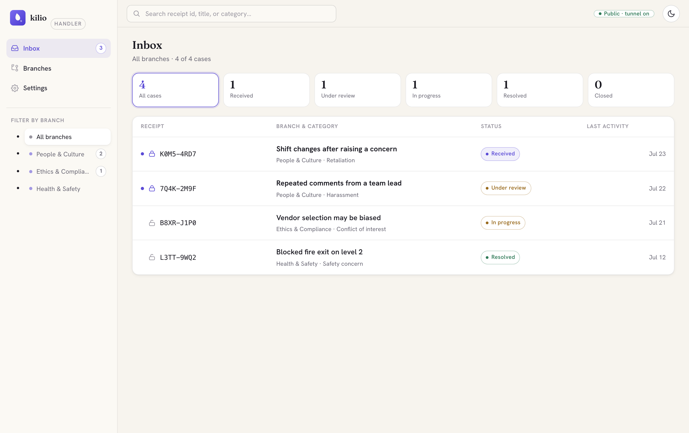

Reports no one but your team can read.
kilio is sealed, anonymous-first intake for harassment, misconduct, and whistleblowing reports. A reporter needs no account and no email. You run it on hardware you control — there is nothing to hand over but ciphertext.
Sealed before it leaves the device · No account, ever · MIT OR Apache-2.0

0.1.0 — sealed-crypto core, sealed store, and both web surfaces landed; server & Tauri packaging in progress.
HPKE to the branch key, in the browser. The host only ever holds ciphertext.
No name, email, or account. A receipt passphrase is the only credential.
Replies seal to the same claim key. Nobody in the middle can link them.
No IP/UA logging on intake, size-bucketed ciphertext, PoW instead of accounts.
One binary, one org. Decentralized delivery via kotva is opt-in, never required.
Built so the host can't read the claim
Every property below exists because a reporter's trust in the channel is the whole product. Nothing here is a policy promise — it's what the cryptography and the seams enforce.
Sealed at source
Every claim is HPKE-sealed (RFC 9180, X25519 / HKDF-SHA256 / ChaCha20Poly1305) in the reporter's browser to your branch's public key before it leaves the device. The server, the tunnel, and the database hold ciphertext only.
No account, no email
Reporters get a twelve-word receipt passphrase at submission — the only identity they ever need. Lose the phrase and access is gone by design; there is no recovery to abuse.
Anonymous two-way channel
Handlers can ask follow-up questions and share outcomes without ever learning who sent a claim. Replies seal to the same per-claim key the reporter alone controls.
Multi-branch routing
One deployment can serve many offices, regions, or a "global" catch-all. A claim seals to the branch the reporter chose; denied reads return 404, never a forbidden that leaks existence.
Go public in one click
A built-in tunnel (cloudflared / ngrok) turns a laptop or a small VPS into a public intake page with no fixed infrastructure. Prefer your own reverse proxy or a Tor hidden service instead.
Standalone or decentralized
kilio runs as one self-contained binary by default — SQLite, no external services. Turn on kotva delivery to forward sealed claims over a content-blind rendezvous relay.
An honest threat model
Each adversary in the design doc gets a concrete answer enforced by the crypto or the seams — not a policy a future admin could quietly relax.
Quick start
One Cargo workspace. The sealed-crypto core builds and tests today; the server, CLI, web, and desktop surfaces are landing — see the status note above.
git clone https://github.com/vul-os/kilio cd kilio # build the workspace, test the sealed-submission crypto spine cargo build --workspace cargo test -p kilio-seal # intended operator flow (surfaces landing) kilio init # generate a branch keypair, sealed at rest kilio serve --port 8787 # intake + handler API, embedded PWA kilio tunnel start # go public, no fixed infra
- 1BuildRust stable 1.85+. Node 20+ and the Tauri prerequisites for the desktop handler app, as the surfaces land. A bare workspace build never touches a cloud dependency.
- 2Init a branch
kilio initgenerates your branch's keypair locally. The private half never leaves your machine — it's the only thing that can ever open a claim. - 3Go public
kilio serveruns the intake and handler API;kilio tunnel startexposes it with no fixed infrastructure, or put it behind your own reverse proxy or Tor.
The sealed-crypto core (kilio-seal) and the full design (decisions.md) are landed and tested. See the getting-started docs for what's built versus in progress.
Standalone by default, decentralized when you want
kilio ships as one self-contained binary — SQLite, no external services, no multi-tenant server. Multi-branch is the built-in axis of scale inside one org; multi-org is just more instances, optionally linked over kotva.
No shared database
Every organization runs its own instance and holds its own branch keys. The org that receives claims is the only party that can ever decrypt them — that's the entire trust boundary, not a policy on top of a shared one.
Content-blind relay, opt-in
Turn on decentralized delivery to forward sealed claims to an outside ombudsman or a sibling org through a rendezvous mailbox — a courier, not a reader.
Nothing hosted to lose
There is no hosted kilio to be acquired, subpoenaed as a fleet, or shut off. If it's running, it's because your organization chose to run it, on hardware it controls.